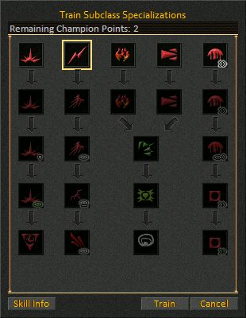

The Train Subclass window is used to train your champion abilities.
The window appears when you are at least Champion Level 1 and right click on any base class (guardian, magician, etc) trainers other than the class you are in. For Example, if your base class is guardian, you cannot subclass train in the guardian skill but you can subclass train in any of the other base class skills. You get one champion skill point to spend on subclass training with each Champion level and can only have a maximum of ten. The number of remaining champion skill points you have to spend appears at the top of the display. In the center of the display are various icons arranged in the order which you can train in them. Click on any of the icons and then the Skill Info button to learn more information about the selected subclass skill. Click on the Train button to train in the selected skill or the Cancel button to ignore the selection and close the window. Champion re-specs can be purchased from an NPC in the King's chamber of each realm.
Note: Your Champion level (and available Champion Points) will NOT automatically increase as you gain Champion XP. You must interact with the King in your realm in order for your Champion status to be updated.
There is nothing shown when the window is concealed. The window is invisible with no graphics or controls to minimize the amount of memory used. Nothing will appear on the screen when you attempt to activate the window.
